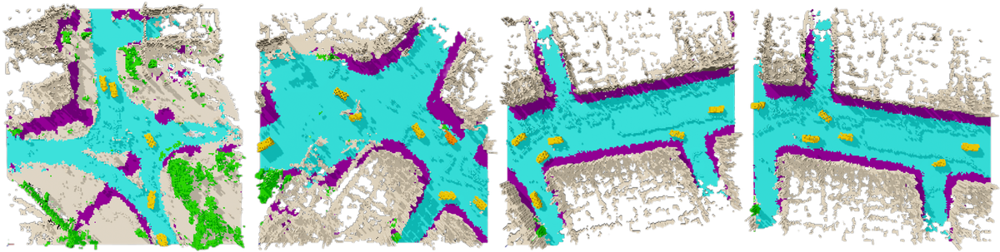
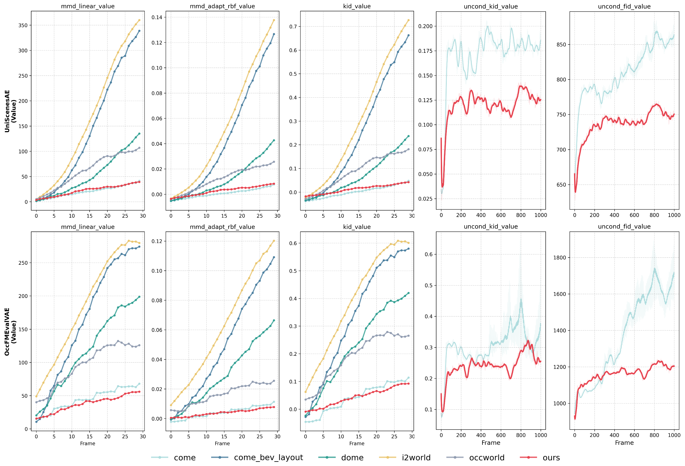
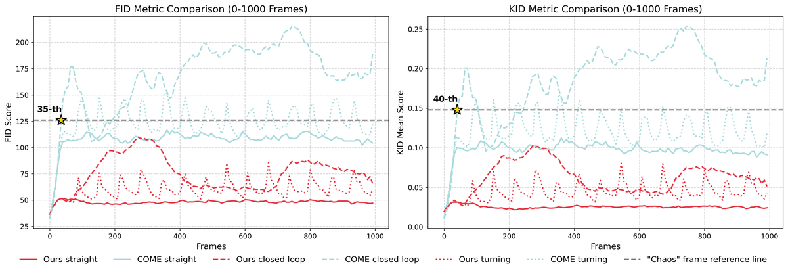
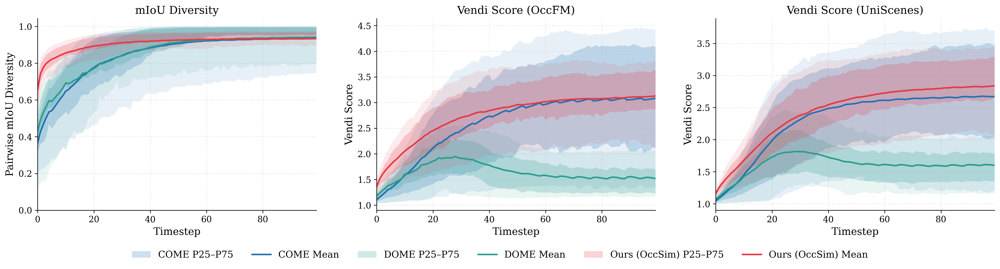
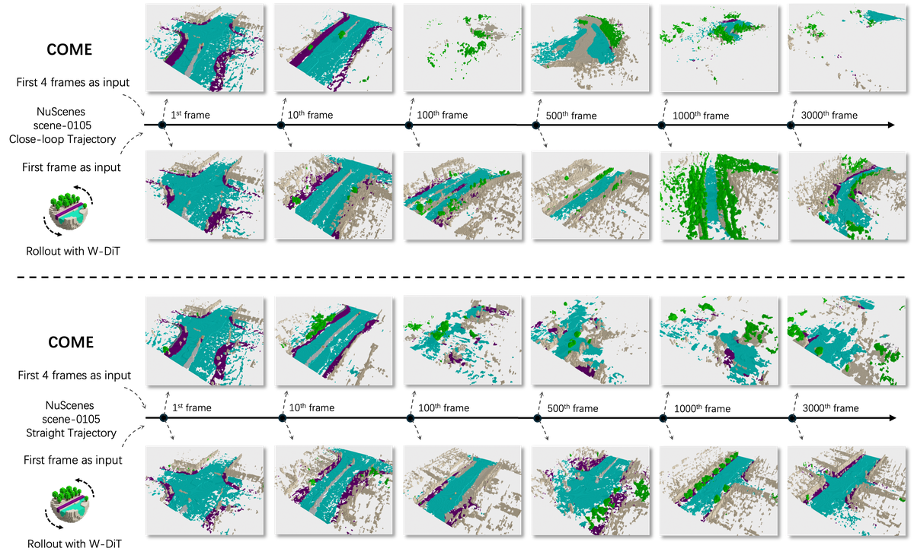
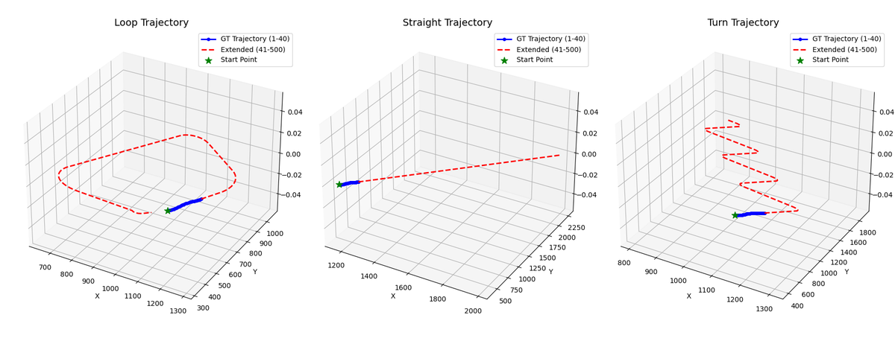

OccSim
简单摘要
长视野占用世界模型的多公里仿真 Tianran Liu⋆, Shenwen Zhao, Mozhgan Pourkeshavarz, Weican Li, Nicholas Rhinehart† 数据驱动的自动驾驶仿真长期以来一直受到严重依赖预先记录的驾驶模拟的限制。作者的总体方法路径是：这种基本依赖性严重限制了可扩展性，将开放式生成能力限制在现有收集数据集的有限规模内。
另外一个关键点是，为了打破这个瓶颈，我们推出了 OccSim，第一个居住世界模型驱动的 3D 模拟器。从结果来看，OccSim 消除了对连续日志或高清地图的要求；。


具体来说，我们认为一个全面且可扩展的数据驱动模拟器必须满足以下需求。作者的总体方法路径是：模拟器不仅应该近似真实世界传感器数据的分布（高保真传感器真实性），而且还应该固有地生成密集的语义标签，从而消除对手动注释的依赖。
另外一个关键点是，理想情况下，它具有在新颖的、未见过的场景中进行开放式生成的能力，以克服所收集数据的规模限制。从结果来看，“我们如何构建一个数据驱动的生成模拟器来有效地满足这些需求？”为此，我们提出了 OccSim。
核心创新
这篇工作的创新不是简单堆模块，而是把问题重新定义为：长视野占用世界模型的多公里仿真 Tianran Liu⋆, Shenwen Zhao, Mozhgan Pourkeshavarz, Weican Li, Nicholas Rhinehart† 数据驱动的自动驾驶仿真长期以来一直受到严重依赖预先记录的驾驶模拟的限制。
另一项关键新意在于：这种基本依赖性严重限制了可扩展性，将开放式生成能力限制在现有收集数据集的有限规模内。这使方法不只是能生成结果，更能解释为什么会有效。
进一步看，为了打破这个瓶颈，我们推出了 OccSim，第一个居住世界模型驱动的 3D 模拟器。这也是它和纯工程拼装方案拉开差距的地方。
技术细节
方法主干可以概括为：当将收集的 OccSim 数据集缩放至 5 倍大小时，零样本性能进一步提高至 74%，而相对于基于资产的模拟器的改进扩大至 22%。这组公式用于定义模型中的变量关系和训练目标。建议先看左侧要预测的对象，再看右侧每一项如何约束优化方向。该公式用于定义核心计算关系。阅读时先看左侧目标量，再看右侧由 B、A、f、t 等变量构成的约束和聚合方式。该公式用于定义核心计算关系。阅读时先看左侧目标量，再看右侧由 i、i、i、B 等变量构成的约束和聚合方式。
$$ P(\mathbf{z}_{1:K} | \mathbf{z}_0, J_{0:K+\sigma}) = \prod_{i=1}^{K} P_{\theta}(\mathbf{z}_{i} | \mathbf{z}_{i-1}, J_{i-1:i+\sigma-1}), $$
$$ [\gamma_{\text{global}}, \beta_{\text{global}}, \alpha_{\text{global}}] = \text{MLP}_{\text{time}}(\tau), [\mathbf{\Gamma_{\text{token}}}, \mathbf{B}_{\text{token}}, \mathbf{A}_{\text{token}}] = \text{MLP}_{\text{cond}}(\hat{f}_{t+1}) $$
$$ \gamma^{(i)} = \gamma_{\text{global}} + \mathbf{\Gamma_{\text{token}}}^{(i)}, \quad \beta^{(i)} = \beta_{\text{global}} + \mathbf{B}_{\text{token}}^{(i)}, \quad \alpha^{(i)} = \alpha_{\text{global}} + \mathbf{A}_{\text{token}}^{(i)} $$




实验结论
实验主要围绕一个核心问题展开验证：指标和数据集为了回答第一个问题，我们在两个主要维度上评估其性能。
从主要对比结果来看，继之前的工作之后，我们通过 2D/3D-FID、KID 和 MMD（如下所示）评估静态真实感。定性结果与消融实验进一步表明：这评估了在初始观察和自我轨迹的严格约束下每个特定时间索引（等于 GT 序列的长度）的结构准确性。


理解评价
从整篇论文看，它的真正贡献是：当将收集的 OccSim 数据集缩放至 5 倍大小时，零样本性能进一步提高至 74%，而相对于基于资产的模拟器的改进扩大至 22%，而不是单纯把扩散模型继续微调。作者把问题落在“分布外驾驶场景如何稳定生成”这个更关键的缺口上。
它最有说服力的地方在于：值得注意的是，与在 CARLA 模拟器 (Uni-C) 上训练的模型相比，在 OccSim 生成的数据上训练的模型实现了更好的性能，这表明两个语义预测模型的平均 mIoU 至少有相对的改进。这说明论文的方法链路——3D 点云编辑、车辆补全、再到 RL 后训练——是前后闭合的，而不是各模块各自堆叠。
主要局限在于：然而，值得注意的是，与它们相比，我们的方法在实时性能方面也取得了显着的改进。如果继续往前推进，一个自然方向是把更长时序、更低成本训练和更广泛的 OOD 场景覆盖一起纳入统一评估。
以下相关论文可作为延伸阅读：。